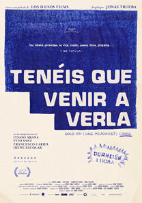

Tenéis que venir a verla
Todo comienza en el Café Central de Madrid a finales de 2020.
Un grupo de amigos acude a ver la actuación de Chano Domínguez, que presenta su última creación, que, señala, compuso durante el confinamiento.
Terminada la actuación, muy aplaudida, las dos parejas comentan lo bien que estuvo, dando las gracias Elena y Daniel a sus amigos por haberles avisado, recordando que le vieron allí mismo cuatro años antes, cuando Susana y Guillermo, la otra pareja, todavía no estaban juntos.
Lamentan lo poco que se ven, e indican Susana y Guillermo que la próxima vez debe ir la otra pareja a conocer su casa, pues, les indica, se tarda solo 30 minutos en cercanías, y llevan 9 meses sin verse ya, aunque entre medias llegó la pandemia.
Les cuentan además que Susana está embarazada, y brindan por ello.
Ya en casa, Daniel parece haberse quedado absorto, diciendo que a él no le interesa lo de sus amigos y parece que se tiene que sentir culpable por no hacer lo mismo que ellos y por eso insistían en que tenían que ir a ver su casa e indica que a él le parece raro tener un hijo con el mundo como está.
Ella dice que le parece raro porque no los veía desde hacía mucho tiempo y ahora los ha visto, diciendo él que no los ve raros mientras que no los ve, y cuando lo hace se da cuenta de que se ha acostumbrado a no verlos.
Ya en la cama él dice que le gusta lo que hace, la ciudad, los edificios, el asfalto y las rotondas, los bolardos, los cubos de basura…
Seis meses después
Elena y Daniel cogen finalmente el tren, llevando un ramo de flores.
Cuando llegan a la estación de Alpedrete y llaman a su amigo, pues cogieron un tren diferente al que tenían previsto.
Les recoge Guillermo, que les dice que allí tienen que hacer su vida en coche, porque las distancias son grandes, pero que está muy contento, mostrándole varios de los sitios a los que suelen ir.
Elena le pregunta si han hecho amigos, diciendo Guillermo que allí es difícil hacer amigos, pues la gente está en sus casas, con sus jardines y para hacer amistades hay que tener hijos y conocer a otros padres en el colegio.
Les dice también que Susana está trabajando mucho en la editorial.
Les enseñan la casa, que era de un familiar de Susana.
Elena y Susana hablan luego entre ellas, contándole la segunda que Guillermo está feliz allí y a ella le encanta verle así, pero a ella a veces se le hace pesado, indicando que él lo tenía más claro.
Le dice que la pérdida del niño Guillermo lo tiene atravesado, pero no le gusta hablar y hace como si no hubiera pasado.
Elena recuerda que los amigos se reían de él porque con 16 años ya decía que quería ser padre, algo que Susana ignoraba.
Susana, por su parte, le dice no estar segura de querer volver a pasar por algo similar de nuevo, y que, después de pasarle a ella, se enteró de muchos abortos de gente cercana a ella, como su abuela, que tuvo tres.
Elena les habla acerca del libro que están leyendo, "Has de cambiar tu vida", que les está resultando muy interesante y del que, de hecho, les lee algunas partes que inciden en la obligación de la colaboración, lo que llama "coimunismo", y en la necesidad de dejar una huella de nosotros imperceptible para la sostenibilidad del planeta.
Guillermo aprovecha un párrafo de los leídos para recordar que tiene razón el libro en algo de lo leído, que es en la necesidad de cuidar a los amigos.
Juegan tras la comida al ping-pong, intercambiando las parejas y salen luego a pasear por el campo, retrasándose Guillermo y Elena, que se quedan haciendo fotos.
Como Elena tiene que hacer pis, y Guillermo se aleja para buscar a su mujer y a su amigo.
Mientras hace pis ella rompe a reír de pronto.
Jonás ordena que corten y todo el equipo de rodaje se aleja, terminada la grabación.